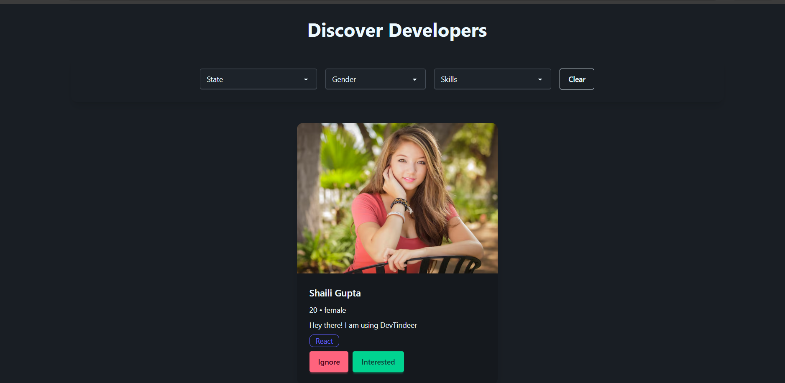
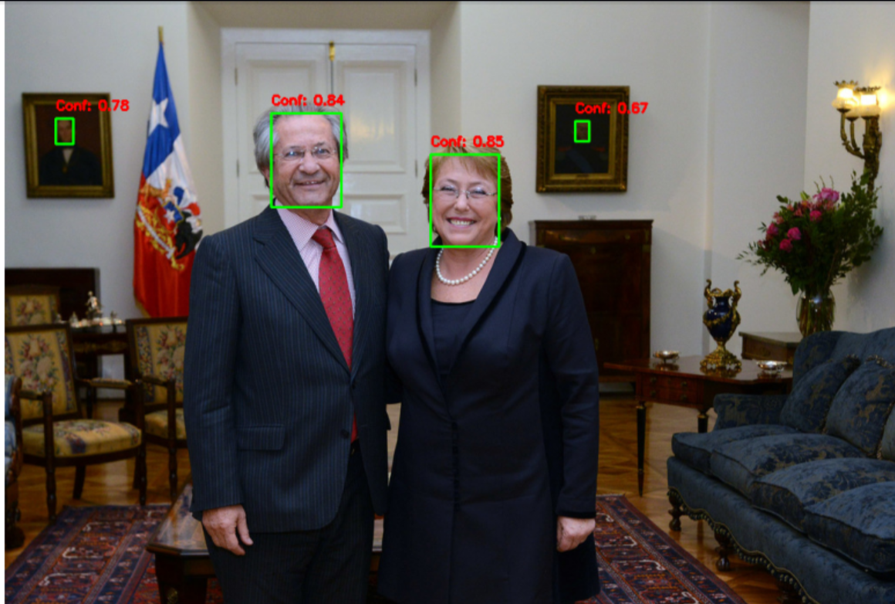
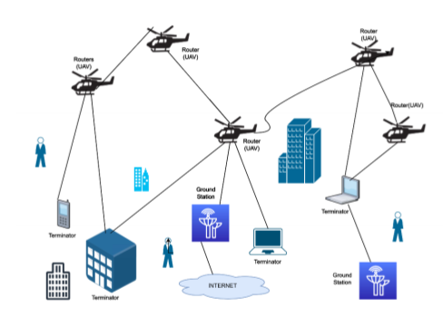

DevNexus
DevNexus is a full-stack developer networking platform that enables users to connect with fellow developers, build professional networks, exchange connection requests, and communicate through real-time chat in a modern, responsive interface.

AI Exam Proctoring System using YOLOv8
An AI-powered exam proctoring system that detects suspicious activities during online examinations using YOLOv8, OpenCV, and FastAPI. The system performs real-time monitoring on the student's machine to identify potential cheating behaviors while maintaining low latency and privacy.
Government Policy Portal
A responsive web platform that simplifies access to government schemes and policies, enabling users to quickly discover relevant information through an intuitive interface with category-based navigation, search functionality, and a seamless user experience.

YOLO Face Detection
A face detection system built using YOLO that detects faces in images and returns confidence scores.

HybriOpt-ACO-FA
Hybrid ACO-Firefly algorithm combining the strengths of both metaheuristics for enhanced optimization performance and faster convergence.